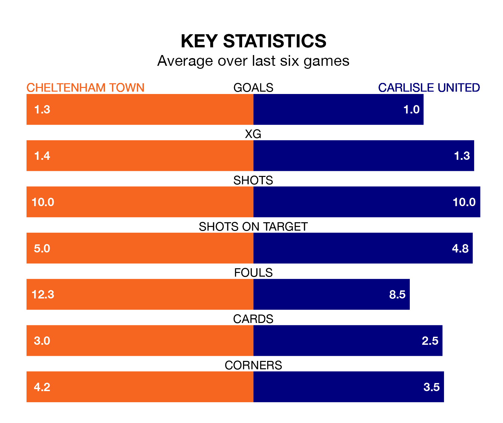

Struggling Cheltenham Town face Carlisle United at the Completely-Suzuki Stadium on Saturday looking to build on a win in their last league outing.
After securing all three points with a 2-1 victory over Portsmouth on January 6, the Robins sit 22nd in EFL League One.
They travel to play a Carlisle side 23rd in the standings, who lost in their last match, 2-1 against Barnsley, on Tuesday.
In the last 10 years, Cheltenham and Carlisle have played each other on 11 occasions. Cheltenham won five of them, Carlisle four, and they drew twice.
On average, the Robins scored 0.8 goals and Carlisle 0.9 in those matches.
Their last meeting was on December 23, when Cheltenham won 1-0 away.
Cheltenham are in mixed form in EFL League One, with three wins and a draw from their last six games.
With a win and a draw over that period, Carlisle's form is much worse – they have taken four points from 18, compared to Town's 10.
With 19 goals in 25 games so far this season, the Robins are the league's third-lowest scorers with 0.8 goals per game. And they are conceding more than average, letting in 34 goals at a rate of 1.4 per game.
United are also below average scorers, with 0.8 goals per game, compared to a league average of 1.3. They have conceded 1.5 goals per game.
Saturday's match will be refereed by Peter Wright, who has taken charge of six EFL League One games so far this season, issuing one red card and booking 20 players. He has awarded four penalties.
The last Cheltenham game Wright refereed was a 1-1 home draw with Derby County on October 7. His last Carlisle match was their 1-1 draw at home against Fleetwood Town on August 5.
Updated: 10:02 (UTC), 19/01/24